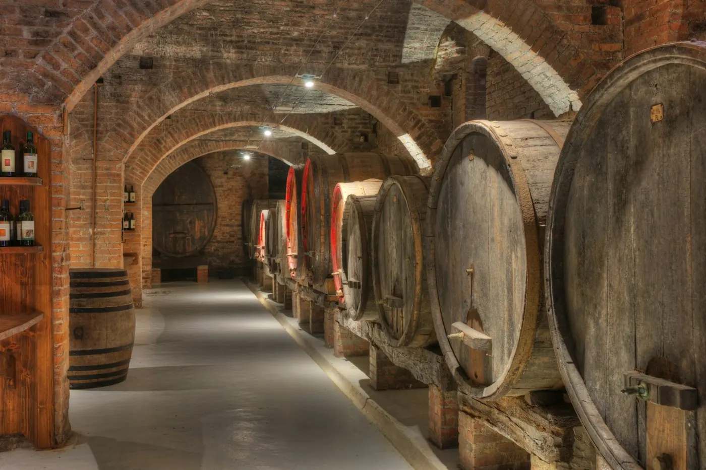

Niveau −1 · La cave et le bar
Ce qu'on sert,
ce qu'on vend.
Au bar, la carte du jour. En cave, deux cents vins dont huit sur dix du Roussillon, quatre cent cinquante bières, deux cents bières craft et cent cinquante spiritueux.

Au comptoir
La carte du bar.
Prix TTC, service compris
Vins au verre 12 cl
La sélection de la semaine, Côtes du Roussillon ou Collioure
Frais et minéral, souvent de la vallée de l'Agly
Selon la saison
Banyuls, Maury ou Rivesaltes, 6 cl
Choisissez en rayon, on l'ouvre pour vous avec un droit de bouchon
Bières pression 25 cl · 50 cl
Une brasserie artisanale différente chaque mois
Bières en bouteille
Au frais, à choisir dans les frigos de la cave. Demandez conseil.
Spiritueux 4 cl
Agricoles, ambrés, arrangés
Écosse, Irlande, Japon et France
Servi en gin tonic, 9 €
Byrrh, vermouths et quinquinas catalans
Sans alcool
À grignoter
Ardoise au comptoir
Fuet, llonganissa, jambon, pain grillé
Fromages de brebis et de chèvre des Pyrénées
Pour deux à quatre personnes
L'abus d'alcool est dangereux pour la santé, à consommer avec modération. Allergènes : demandez au comptoir.
En cave, à emporter
Les grandes
bouteilles.
Notre sélection de vins doux naturels du Roussillon, avec quelques cousins d'Espagne et du Portugal. Vente en cave uniquement : appelez pour mettre une bouteille de côté.
Le conseil en plus
Ce que la cave
fait pour vous.
Coffrets cadeaux
On compose un coffret selon le budget et les goûts de la personne à gâter.
Recherche de millésimes
Une année de naissance, de mariage ? On cherche la bouteille pour vous.
Verrerie et accessoires
Verres, carafes, tire-bouchons : tout pour bien servir à la maison.
Soirées dégustation
Spiritueux, vins, bières : des soirées découverte en petit comité. Voir les dates